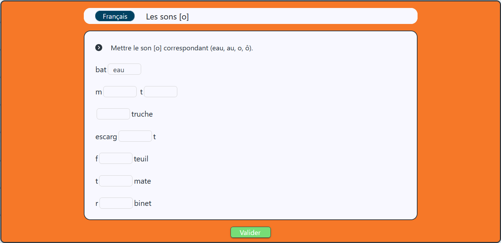

Bonjour et bienvenue sur Dys-Class,
ce site a étè crée pour des enfants avec des troubles Dys,
et pour que les enseignants ou parent peuvent proposer des exercice à tout les niveaux aux enfants.
Liens utilie
Pour plus de d'information sur les differents types dys et ou se renseigner dans votre region :